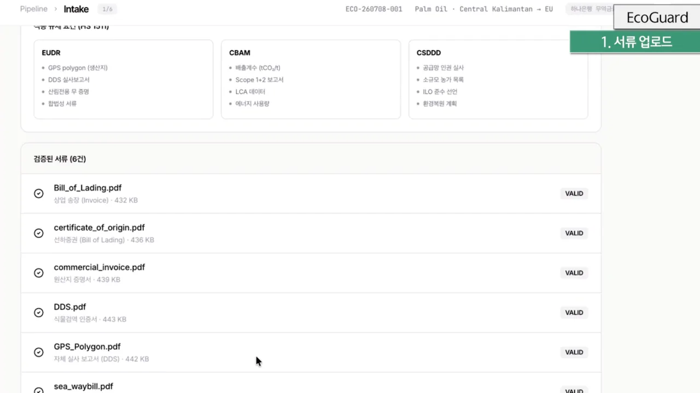
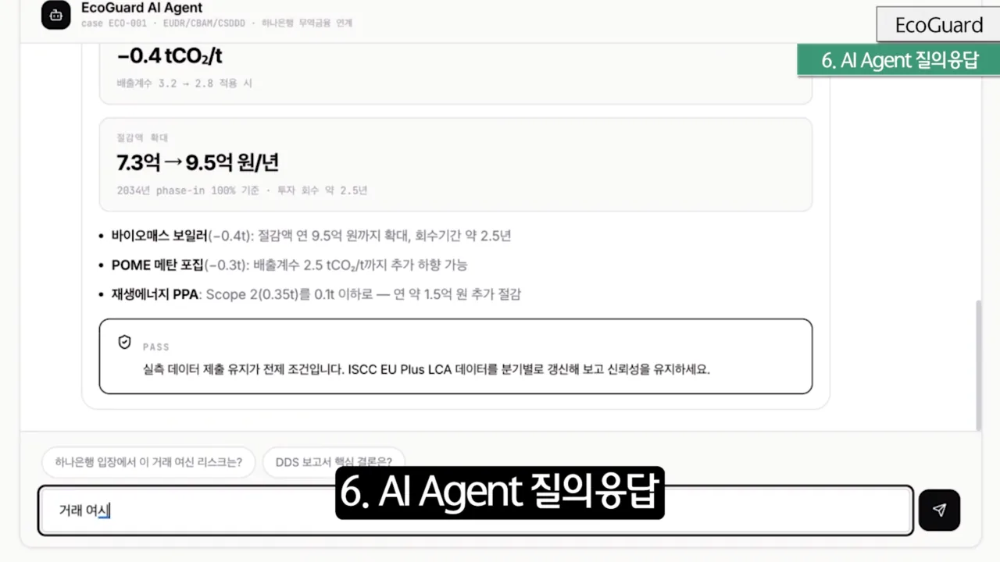
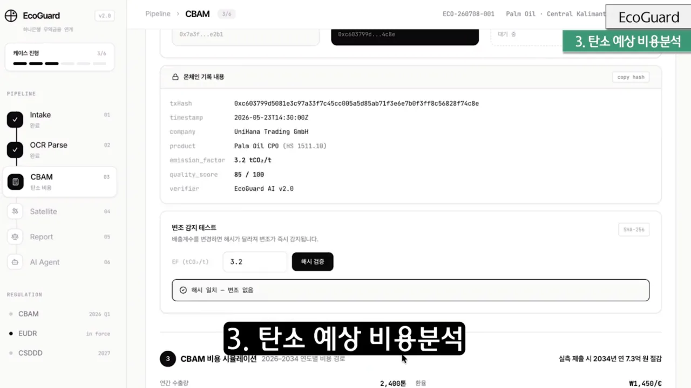
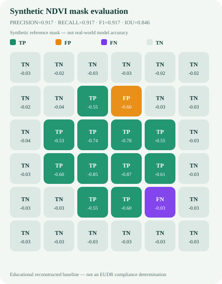

STAGE 1 · RAW INTAKE
원천자료를 있는 그대로 받는다
스캔 문서, 자유 형식 메모, 표, 위치자료처럼 형태가 다른 입력을 접수합니다. 목표는 ‘깔끔한 문서라고 가정하지 않는 것’입니다.
- 원본 파일과 줄·필드 위치 보존
- 빈칸과 모호한 값을 임의로 채우지 않음
EcoGuard · Project case study
비정형 수출 데이터를 검토 가능한 증빙으로 바꾸고, CBAM 비용과 산림 변화의 근거를 연결한 무역금융 교육용 PoC
증명에 시간을 쓴 뒤에야, 데이터 전처리·계산·근거 추적이라는 우리의 기술이 왜 실무에서 의미 있는지 더 선명하게 보였다.

01 · From OCR to evidence
현업의 메모와 내부 양식은 누락·단위 혼용·자유로운 표현이 많습니다. 그래서 문자 인식률보다 값의 의미를 정리하고, 어디에서 왔는지 추적하며, 필요한 규정 근거와 연결하는 전처리에 집중했습니다.
STAGE 1 · RAW INTAKE
스캔 문서, 자유 형식 메모, 표, 위치자료처럼 형태가 다른 입력을 접수합니다. 목표는 ‘깔끔한 문서라고 가정하지 않는 것’입니다.

STAGE 2 · NORMALIZE
같은 의미의 항목명을 통합하고 단위를 맞춥니다. 값마다 원본 위치를 남겨 계산 결과에서 원자료까지 되짚을 수 있게 설계했습니다.

STAGE 3 · GROUND
“문제가 있다”는 문장에 그치지 않고 관련 조문, 요구사항, 보완 행동을 함께 찾는 검색·근거 제시 구조를 준비했습니다.
02 · Reproducible technical core
모델 화면보다 중요한 것은 같은 입력에서 같은 결과가 나오고, 어떤 값과 가정이 결과를 만들었는지 설명할 수 있는가였습니다.

구조 설명을 위한 교육용 계산입니다. 분석자 적용계수는 법정 phase-in 계수가 아니며 실제 신고액·인증서 의무·공식 산정값을 제공하지 않습니다.

작은 합성 정답셋에서 metric code path를 검사한 기준선입니다. 실제 위성 모델 성능, 현장 실사 또는 공식 EUDR 적합성 판정을 뜻하지 않습니다.
03 · Proof journey
기능을 늘리는 일보다 데이터와 근거를 되짚을 수 있게 만드는 데 더 많은 시간을 썼습니다.